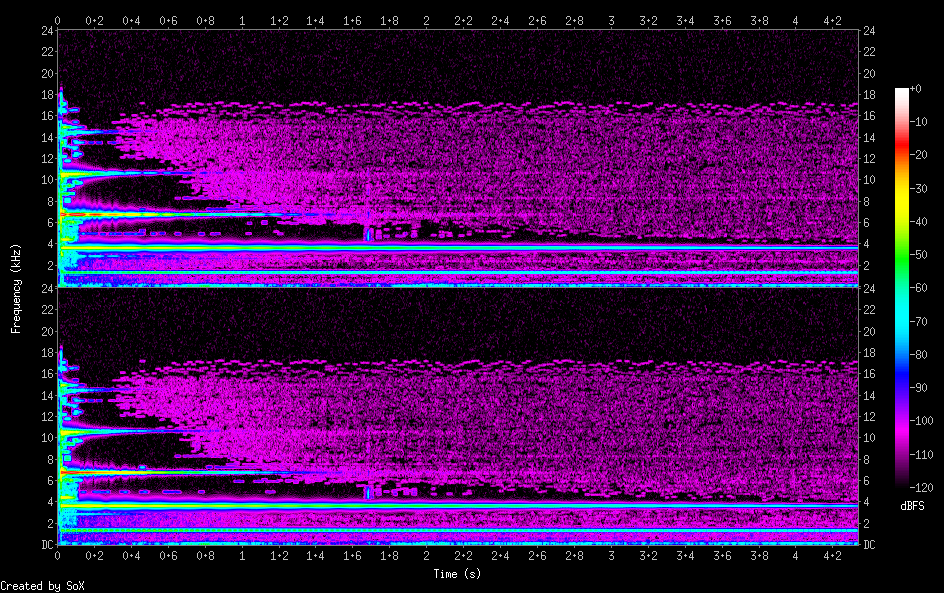

Perc_bell
/cc0/sonic_pi/samples/perc_bell/perc_bell.rb
sample :perc_bell
{
"samples_read": 416556.0,
"length": 4.339125,
"scaled_by": 2147483647.0,
"maximum_amplitude": 0.369088,
"minimum_amplitude": -0.400095,
"midline_amplitude": -0.015503,
"mean_norm": 0.007831,
"mean_amplitude": 0.0,
"rms_amplitude": 0.027226,
"maximum_delta": 0.665519,
"minimum_delta": 0.0,
"mean_delta": 0.01239,
"rms_delta": 0.048108,
"rough_frequency": 13498.0,
"volume_adjustment": 2.499
}